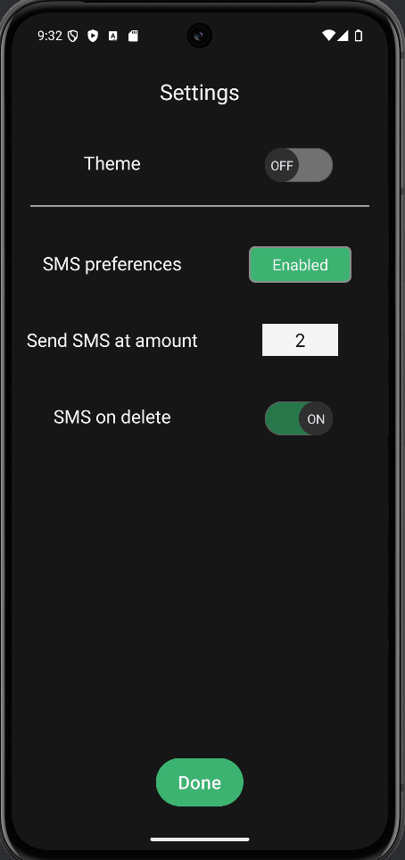

Assessing the artifact
In the original project from this artifact, we had to create an android application.
This application needed to have a log in screen, utilize the SQLite database, and send SMS
messages to users.
For this application, I chose to create an inventory management system, that sends notifications
when an item quantity reaches zero.
In this enhancement, I wanted to further my understanding of SQLite, UI/UX, and input
validation.
My plan to accomplish this goal was to create a user table in the database and add more
settings.
Further, wherever a user can send data to the application, I want to validate data.
Creating the Settings Screen
My first step in enhancing this project is to add a discrete settings screen.
Previously, we only had a button for enabling SMS notifications through Android settings.
For this, I replaced the SMS button with a gear.
This gear would take you to a new screen where you will be able to change your theme,
enable SMS, turn on SMS upon deletion and set your alert quantity.
After completing this screen, I soon noticed that my next step is to create the user table in
SQLite.
I needed somewhere to save the settings when the app is not in operation.

Creating the User Table
My next step is to create a new SQLite table for storing the user information.
Since this is a small-scale application, I didn't make it too complex.
The user table stores the username, password, and each of the settings mentioned previously.
This was helpful for enhancing the login and create account system that the app has.
Previously there was only one user verified by the system, now you can create one!
Creating the Light Theme
Now that all the underlying structure was finished, it was time to work on another
section of the project,
the light theme. For this I wanted to follow some very simple guidelines, the black background
would become white,
and the text would become black. This kept the secondary color as a consistent green color.
I had many issues with implementing the theme, I tried to use Androids theme folder, but it was
having issues overriding all the other data.
I eventually got it working, but it wasn't as nice as I would like. If I was to go back, I would
develop the UI with the theme in mind,
this way I can take full advantage of Android's theme organizing.
Wrapping up and Testing
Now that all the enhancements are complete, it is time to test that everything is working
as promised.
For this test, I wanted to take it a step further and ensure that the app worked on multiple
Android versions.
For this I tested the app on API versions 25 to 35. I found that the versions 25 and 26 did not,
but every other version worked as expected. To conduct the tests, I would launch the
application,
create an account, add items, enable SMS, change settings and then kill the app.
I wanted to test if the settings would change after relaunching.
Further, I tested if SMS would send an alert at my desired quantity and if it would alert on
deletion.